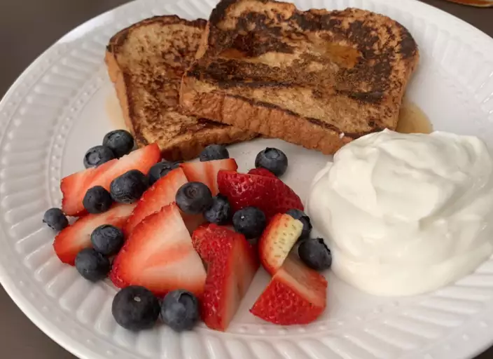

Fluffy French Toast

Description
There may be no better morning breakfast than Fluffy French Toast. This recipe will take roughly
10 minutes for prep time and 20 minutes for cooking and will yield about 12 servings, leaving you plenty
for tomorrow.
Ingredients
- 1/4 of all-purpose flour
- 1 cup of milk
- 3 eggs
- 1 tablespoon white sugar
- 1 teaspoon vanilla extract
- 1/2 teaspoon ground cinnamon
- 1 pinch of salt
- 12 thick slices of bread
Steps
- Measure flour into a large mixing bowl. Slowly whisk in milk. Whisk in eggs, sugar, vanilla extract, cinnamon, and salt until smooth.
- Heat a lightly oiled griddle or frying pay over medium heat.
- Soak Bread Slices in milk mixture until saturated.
- Working in batches, cook bread on the preheated griddle or pan until golden grown on each side. Serve hot.